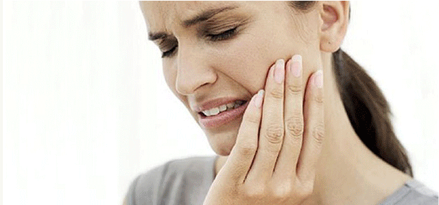

Diş kaplamaları genelde porselen kaplama şeklinde uygulanır ve metal destekli ya da metal desteksiz olmak üzere ikiye ayrılır. Son yıllarda sosyal yaşamın artması ve gelişen teknolojiyle birlikte bireyler estetik ihtiyaçlara daha çok gereksinim duymaktadırlar. Continue reading “Zirkonyum Diş Kaplama Nedir?”
Kategori: Yazılar
Dentway Diş Kliniği Suadiye
İstanbul denince akla ilk gelen caddelerden birisi Kadıköy’de bulunan Bağdat Caddesi’dir. Bağdat Caddesi’nde dünyaca ünlü markaların mağazaları, restoran ve kafeleri olduğu gibi bir takım özel sağlık kuruluşlarını da kapsamaktadır.
Özel tıp merkezlerinden diş kliniklerine kadar birçok kaliteli sağlık hizmeti alabileceğiniz kurumlar mevcuttur. Diş poliklinikleri arasında öne çıkanlardan birisi de Suadiye’de bulunan Dentway Diş Kliniği’dir. Dentway Diş Kliniği bünyesinde bulundurduğu alanlarında uzman 15 hekimiyle beraber hastalarına multidisipliner tedavi çözümleri sunmaktadır.
Dentway diş kliniği Suadiye’de alışılmışın dışındaki en önemli özelliği hastalarıyla olan iletişimleri diyebiliriz. Kliniği ziyaret eden hastaların birçoğu kendilerini sanki evlerindeymiş gibi hissettiklerini ifade ediyorlar. Bu samimi ve içten ortamın oluşmasındaki en önemli faktör ekip ruhunu oluşturmalarından kaynaklanmaktadır. Dentway’de çalışan hekim, asistan, sekreter ve yardımcı personeller arasındaki iletişimin iyi olması iş akışını kolaylaştırdığı gibi hastalarında kendilerini içeri çeken bir ruh haline sahip olmalarını sağlamaktadır.
Dentway diş kliniği Suadiye’nin çalışma sisteminden kısaca bahsetmek gerekirse, ilk randevuda hastaların muayenesi yapılıp bir tedavi planı çıkarılmaktadır. Muayene eden hekim gerekli görürse muayenesi panoramik röntgen ile hatta bazı durumlarda klinik bünyesinde bulunan 3 boyutlu tomografi sistemi ile destekleyebilmektedir. Ardından çıkan tedavi planının maliyeti konusunda muhasebe bölümü hastalara gerekli bilgileri aktarmaktadır. Hastaların kabul etmesi durumunda tedavilerine aynı gün başlanabilmektedir.
Dentway diş kliniğini farklı kılan en önemli özelliklerden bir tanesi de her tedavinin alanında uzman hekimler tarafından yapılmasıdır. Örnek vermek gerekirse, cerrahi bir tedavi gereksiniminde (implant, gömülü 20 yaş diş çekimi gibi) çene cerrahı işlemi yapmaktadır. İmplant üstü porselen kaplama yapılacağı zaman ise protez uzmanı hekimler hastayı devralmaktadır. Başka bir örnek ise, diş eti rahatsızlığı olan bir hastanın tedavileri diş eti hastalıkları uzmanı tarafından yapıldıktan sonra restoratif tedavilerinin devamı için ilgili uzman hekime yönlendirilmektedir.
Dentway Diş Kliniği Suadiye’yi öne çıkaran bir diğer özellik ise çocuk diş tedavilerine verdikleri önemdir. Klinikte bulunan 7 tedavi odasında 2 tanesi sadece çocuk hastaların tedavisi için organize edilmiş durumdadır. Dentway diş kliniğinin bünyesinde 3 çocuk diş sağlığı uzmanı bulunmaktadır.
Çocukların rahat tedavi olabilmeleri için her türlü detay düşünülmüş durumdadır. Örneğin çocuk hastaya tedavisi başlamadan önce hangi çizgi filmi izleyeceği sorulur ve tedavinin stresine girmemesi sağlanır. Tedavi bittikten sonra kendisine bir başarı kitapçığı hediye edilir ve ayrıca hediye dolabından bir hediye seçebilmektedir. bu tip küçük sürprizler tedavileri devam edecek küçük misafirlerin bir sonraki randevusuna daha istekli gelmesini sağlamaktadır. Her bireyde olduğu gibi çocuk hastalarında kontrollerinin çok düzenli bir şekilde yapılması gerekir.
Dentway diş kliniği bu konuda oldukça prensipli bir şekilde hastalarını tek tek takip edip çocuk diş hekiminin tespitleri doğrultusunda 4 veya 6 ayda bir kontrole çağırmaktadır. Bu şekilde çocuk hastaların kontrollerini aksatmamasını sağlayıp olası dişsel sorunların başlangıcında fark edilmesini ve erken dönemde tedavisinin yapılmasına olanak sağlamaktadır.
Dt. Arca Baydar
Gülüş Tasarımı
Estetik diş hekimliğinin günümüzdeki en popüler kelimeleri “Gülüş Tasarımı” ya da “Gülüş Estetiği” olarak karşımıza çıkmaktadır. Continue reading “Gülüş Tasarımı”
Diş Estetiği
Yakın geçmişte diş hekimliği denince akla diş ağrısı çeken bireylerin sorununu günlerce süren kanal tedavileri ya da diş çekimi yapılmasıyla tedavi eden bir tıp dalı gelirdi. Fakat günümüzde modern tedavi yöntemleri geliştikçe insanların zihinlerinde sadece diş ağrısı gelmemektedir.
Bunun en önemli faktörü estetik diş hekimliği teknolojisinin gelişmesinden ve insanların birbirinden bu gelişmeleri birbirine anlatmasından kaynaklanmaktadır. Bu durum öyle bir hale gelmiştir ki kliniklere başvuran hastaların büyük çoğunluğu estetik diş tedavisi yaptırmak amacı taşır hale gelmiştir.
Estetik diş hekimliği uygulamaları kişiye özel tasarlanan, özellikle hastanın isteği ile doğru orantılı, hasta-hekim-teknisyen çalışmasıyla mümkün olabilmektedir. Hastaların birçoğu internetteki bilgiye ulaşmanın kolaylığı sayesinde estetik diş tedavi metotlarını bilerek diş hekimlerini ziyaret etmektedirler. Fakat en doğru bilgiyi diş hekimlerini ziyaret ettiklerinde yapılan muayene sonrası öğrenebilmektedirler. Çünkü her estetik diş tedavi tekniği her bireye uygun olamamaktadır. Örnek vermek gerekirse daha önceden porselen kaplama yaptıran bireyler yaprak porselen talebinde bulunmaktadır. Fakat teknik olarak kesilmiş dişlere tekrardan porselen kaplama yapılabilir.
Yaprak porselen, kesilmemiş dişlerin ön yüzeylerine yapıştırılabilen bir estetik tedavi yöntemidir. Bu sebeple eskiden porselen kaplaması olan hastalar diş estetiği daha doğal ve güzel olan bir istekte bulunurlarsa kendilerine zirkonyum (metalsiz) porselen ilk alternatif olarak sunulabilir. Zirkonyum porselenler, içinde metal bulundurmadığı için aynı doğal dişler gibi ışığı geçirir ve doğal yansımasını sağlar. Diş estetiği açısından zirkonyum porselen kaplamalar metal destekli porselenlere göre çok daha başarılı bir sonuç vermektedir.
Estetik diş hekimliğinin en güncel tedavi yöntemi olan yaprak (lamina) porselenden bahsetmek gerekirse, az önce de belirttiğimiz gibi daha önce kesilmemiş dişlerin ön yüzeylerine uygulanan bir estetik diş tedavisidir. Öyle ki, altındaki diş dokusu çok daha az aşındırıldığı için zamanla dişin ana renginin hafifçe yanması sayesinde çok daha doğal bir görünüm ve estetik sağlamaktadır. Yaprak porselenlerin yapıştırılma teknikleri ise kaplama porselenlere göre çok daha farklıdır.
Diş yüzeyine uygulanan özel kimyasal ilaçlar sayesinde neredeyse sökülmesi imkânsız bir bağlantı kuvveti ile tutunmasını sağlanmaktadır. O yüzden hastalar sanki kendi dişleriymiş gibi hiç bir kısıtlama olmadan rahatlıkla yemek yiyebilir, ısırma eylemini yapabilirler. Sadece şunu vurgulamak lazım, hastanın kendi dişine ne zarar verebilirse estetik diş tedavileri yapılan kişilerin dişlerine de o hareketler zarar verir.
Estetik diş hekimliği uygulamaları sadece porselen tedavileri ile sınırlı değildir. Dişlerinde aşındırma yapmak istemeyen hastalarda özellikle beyazlatma ya da bonding uygulamaları da sıklıkla uygulanmaktadır. Kısaca bahsetmek gerekirse, bonding uygulamaları estetik diş hekimliğinin en sık başvurulan tedavi seçeneği olup dişlere uygulanan özel yapıştırıcı (bonding) malzemeleri sonrasında kullanılan estetik dolgulardır. Özellikle ön dişler arasında aralık olan kişilere sıklıkla uygulanan estetik bonding tedavisi tek seansta hastaların gülümsemesini çok daha farklı ve özgüveni yüksek hale gelmelerini sağlamaktadır. Estetik diş hekimliğinin vazgeçilmezlerinden biri olan beyazlatma tedavisi ise diş yüzeylerine uygulanan özel ilaçların etkisi sayesinde sonuç vermektedir. Estetik diş hekimliğinde birçok beyazlatma tekniği mevcuttur.
Ofis tipi ve ev tipi olarak ikiye ayrılan beyazlatma teknikleri arasında hekimlerin öncelikli tercihi ofis tipi diye adlandırılan klinik uygulamasıdır. Piyasada birçok beyazlatma seti bulunduğundan dolayı her firmanın uygulama çeşidi değişkenlik göstermektedir. Bazı firmalar sadece kimyasal uygulama ile beyazlatma sağlarken bazı firmalar ise lazer gibi güçlü ışık kaynaklarından destek alarak estetik beyazlatma tedavilerini yapmaktadırlar.
Estetik diş hekimliği uygulamalarının en çok tercih edilen tedavilerinden olan beyazlatmanın en önemli komplikasyonu ise dişlerde oluşan hassasiyet durumudur. Özellikle ilk 24 saat hastalar hassasiyetten şikâyet ederler. Fakat bu geçici bir durumdur. Gerekirse tek bir ağrı kesici ilaç ile kontrol altına alınabilir.
Estetik beyazlatma tedavisi sonrası en önemli dikkat edilmesi gereken durum renkli yiyecek ve içeceklerin tüketiminin kısıtlanmasıdır. Eğer kişi çok aşırı bir çay, kahve, kola tüketimi gereksinimi duyarsa kendilerine pipet kullanarak içmelerini öneriyoruz. Buradaki amaç beyazlatma ilacı uygulanan diş yüzeylerinin renkli gıda ile temasını engellemektir.
Dt. Arca Baydar
Diş eti çekilme tedavisi nasıl yapılır ?
Popülasyonun büyük bir kısmında görülen diş eti hastalıklarından biri diş eti çekilmesidir. Diş eti çekilmesi, dişi çevreleyen kemiği örten diş eti dokusunun çeşitli sebeplerden dolayı konumunun değişerek diş kök yüzeyinin açılmasıdır.
Diş eti çekilmesi, estetik ve hassasiyet şikâyetlerine sebep olabilen ve oldukça sık karşılaşılan bir problemdir.
Diş eti çekilmesi sebeplerini şöyle sıralayabiliriz;
- Dişler etrafında biriken mikrobiyal plağa bağlı oluşan diş eti hastalığının ilerleyerek, dişin etrafındaki çene kemiğinin erimesi sonucu diş eti çekilmesi,
- Bir çeşit diş dizilim bozukluğu olan ‘diş çapraşıklığı’ sonucunda diş sıralamasında, normal arktan daha öne doğru pozisyonlanmış olan dişlerde diş eti çekilmesi olma ihtimali yüksektir,
- Ağızda biriken diş taşlarının düzenli aralıklarla profesyonel olarak temizlenmemesine bağlı olarak oluşan diş eti çekilmesi,
- Diş eti kenarlarıyla uyumlu yapılmamış, taşkın dolgu ve/veya protezlere bağlı oluşan diş eti çekilmesi,
- ‘Yüksek frenulum ataşmanı’ olarak adlandırılan dudak bağı kasının yapısal olarak normalden daha yukarı pozisyonlanmış olmasına bağlı olarak diş eti kenarını oynatarak oluşan diş eti çekilmesi,
- Yaşlanmaya bağlı oluşan diş eti çekilmesi.
Diş eti çekilmesi tedavi edilmediğinde ilerleyerek sonunda diş kaybına sebep olabilir. Diş eti çekilmesi tedavilerinde koruyucu, idame edici ve/veya cerrahi yöntemler kullanılmaktadır. Diş eti çekilme tedavisinde önerilen cerrahi yöntemlerde, işlemin süresi ve hastanın istekli olması önemlidir. Çünkü diş eti çekilmesi tedavi yöntemleri birkaç aşamalı cerrahi tekniği gerektirebilir.
Dişeti çekilmesi tedavilerinden bir tanesi hastanın kendi damak dokusundan ‘greft’ olarak adlandırılan dişeti dokusunun alınarak, dişeti çekilmesi olan alana nakledilmesidir. Diğer bir diş eti çekilme tedavi yöntemi ise var olan dişeti çekilmesi alanındaki, diş eti dokusunun açılmış olan diş kök yüzeyini kapatacak yönde yukarı ve/veya yana kaydırılarak, yine hastanın kendi diş eti dokusuyla kapatılmasıdır. Dişeti çekilme tedavisi için kullanılan bu diş eti kaydırma tekniğinde bazen damaktan alınan greft de kaydırılan diş eti alanına eklenerek kombine bir diş eti çekilme tedavisi yapılabilmektedir.
Son yıllarda ise hastalarımızda, damak alanında ikinci bir yara alanının açılmaması ve tıpkı damaktaki diş eti dokusu gibi, kişinin kendi dokusunun dişeti çekilme tedavilerinde kullanılabilmesi için yeni bir diş eti çekilme tedavi tekniği uygulanmaktadır. Bu diş eti çekilme tedavisinde kaydırılan dişeti dokusu, damaktan bir doku almak yerine hastanın kendi kanından elde edilen ‘PRF’ olarak adlandırılan hastamızın kanındaki trombosit hücrelerinden elde edilen kendi fibrin dokusu kullanılmaktadır. ‘PRF’ olarak tanımlanan bu diş eti çekilme tedavisinde kişinin kendi otojen dokusunun kullanılması ve bu dokunun elde edilmesinde ikinci bir yara alanı oluşturmadan uygulanabilmesi yönleriyle, günümüz diş eti çekilme tedavilerinde oldukça değer kazanmıştır. Diş eti çekilmeleri eğer hatalı ve/veya sert diş fırçalama, diş sıkma ve/veya diş gıcırdatma gibi etkenlere sebebiyle meydana gelmiş ise bu etkenleri ortadan kaldırmaya yönelik koruyucu tedaviler önerilir. Koruyucu dişeti çekilme tedavileri arasında doğru diş fırçalama tekniğinin öğretilmesi, hassasiyete yönelik diş macunlarının önerilmesi, diş yüzeyleri ve diş eti etrafındaki travmayı kaldırmak için kişiye özel koruyucu bir gece plağı uygulanarak diş sıkma ve/veya gıcırdatmaya bağlı hasarın durdurulması gibi diş eti çekilme tedavileri önerilmektedir. Diş eti çekilmesi, dişlerin dizilim bozukluklarına bağlı olarak meydana gelmiş ise dişeti çekilme tedavisinde cerrahi bir teknik uygulanmadan önce ortodontik tedaviyle diş dizilimlerini ideal hale getirmek çoğu zaman oluşmuş olan diş eti çekilmesinin düzelmesini sağlayabilmektedir. Ortodontik tedavi sonrası geride kalan bir diş eti çekilmesi var ise bu diş eti çekilmesi miktarı yeniden ölçülerek cerrahi bir diş eti çekilme tedavisinin de ayrıca gerekli olup olmadığı değerlendirilerek diş eti çekilme tedavisine yön verilmektedir.
Diş ağrısı nasıl geçer? Ne iyi gelir?
Dişe canlılığını veren sinir, yapısı gereği sadece ağrı veya soğuk-sıcak hassasiyeti şeklinde kişinin rahatsız olmasına sebep olur. Bu durum dişin verdiği bir alarmdır ve tedavi gerektiği anlamına gelmektedir. Böyle bir durum varlığında hasta en kısa sürede diş hekimini ziyaret etmesi gerekir. Diş ağrısının veya hassasiyetin birden fazla sebebi vardır. Örnek vermek gerekirse, sadece çiğneme sırasında ya da tatlı gıdaların tüketimi durumunda oluşan ağrı basit bir çürük ya da diş eti hastalığının habercisi olabilir.
Özellikle soğuk hassasiyeti, diş etinde meydana gelen çekilmelere ya da diş aşınmalarına bağlıdır. Sıcak gıdaların tüketimi sırasında meydana gelen ağrı ise ilerlemiş diş çürüğünün habercisidir. Bu tip durumda dişin siniri kendini tedavi edemeyecek bir vaziyettedir ve kanal tedavisi yapılması gerekir. Hiç geçmeyen, sürekli zonklama şeklinde devam eden diş ağrılarında da benzer durum söz konusudur. Yani dişin siniri kendini tedavi edemeyeceği için kanal tedavisi ile sinirin alınması gerekir.
Dişin ağrısının meydana geldiği bazı durumlarda kişinin kendi kendine ağrıyı geçirmek için bir takım baskılayıcı ya da engelleyici önlemler alabilir. Örneğin, sürekli devam eden hatta gece uyandıran bir diş ağrısı durumunda kişiye diş hekimine gidecek kadar vakit kazandırabilecek kuvvetli ağrı kesiciler işe yarayabilir. Diş ağrısı için ağrı kesici ilaçlar, hiç bir zaman diş ağrısına sebep olan etkeni ortadan kaldırmaz. Unutulmamalıdır ki, sürekli devam eden, zonklayan hatta gece uykudan uyandıran tipte ağrının etkeninin tedavisi sadece diş hekimleri tarafından yapılabilmektedir.
{kind=link}
Diş eti çekilmesine bağlı ya da diş yüzeyinin aşınmasına bağlı hassasiyetlerin geçirilmesinde hassasiyet önleyici diş macunlarının kullanılması hastayı rahatlatabilmektedir. Özellikle dişler fırçalandıktan sonra mercimek büyüklüğünde bir hassasiyet giderici diş macununu parmak ile diş yüzeyinde bir dakika masaj yapar gibi gezdirilmesi hassasiyetin azalmasını sağlayabilir. Bu durum her hassasiyet probleminin çözümü olarak algılanmamalıdır. Özellikle diş yüzeyi fazla aşınmış dişler için kesin çözüm, aşınan bölgenin diş hekimi tarafından estetik dolgular ile kapatılmasıyla mümkündür. Estetik dolguların yapılmasından sonra bir kaç hafta özellikle soğuk hassasiyeti az da olsa devam edebilir. Bu sürede hassasiyet önleyici diş macunları hastayı ciddi şekilde rahatlatmaktadır.
Dentway Diş Hastanesi
Diş hastanesi olabilmek için sağlık bakanlığının belirttiği yönetmeliğe uymak gerekmektedir. Hastane yönetmeliğinde hastaların yatarak tedavi olabileceği uygun şartların sağlanması gerekmektedir.
Dentway Suadiye diş hastanesi değildir. Hastalar için gece konaklama yapabilecekleri odalar mevcut değildir. Ayrıca genel anestezi alabilecekleri bir ameliyathaneye de ihtiyaç vardır. Diş hastanesinde çok sayıda uzman hekim kadrosu ve müstakil bir bina zorunluluğu vardır. Diş hastanesi bir hekimin kurabileceği bir yapı değildir. Dentway diş klinikleri Anadolu yakası diş hastanesi şartlarına en yakın kliniklerden biridir. Yakın zamanda Dentway diş hastanesi projesini de hayata geçirmek için ciddi çalışmalar yapmaktadır.
Diş hastanesi dediğimizde özellikle cerrahi ve onkolojik diş hastalıklarının da ciddi tedavilerinin yapılıyor olması gerekir. Türkiye’deki en büyük eksiklik genelde çene tümörleri konusunda tek bir merkezin olmamasıdır. Bu konuda bir diş hastanesi ciddi kadrolar barındırmalı ve tüm işlemlerini bulunduğu mono blog ünitede yapmalıdır. Bunun için yeterli teknik ekip ve cihaz ihtiyacı vardır. Özellikle volimetrik tomografi, MR ve 3D printer sistemlerin olmazsa olmazlardandır.
Diş hastanelerinde genel anestezi dışında ayrıca sedasyon altında işlemler yapılabilmektedir. Sedasyon, anestezi doktoru kontrolünde hastanın bilincini tam kapatmadan damar yolundan sakinleştirici ilaçlar verilerek ilgili tedavilerin daha konforlu yapılmasını sağlayan bir tekniktir. Diş hastanelerinde uygulanan sedasyon sırasında hastalar komutlara tepki verirler fakat sonrasında yapılan işlemleri tam hatırlamazlar. Özellikle diş tedavilerinden korkan ya da öğürme refleksi fazla olan hastalarda sedasyon işlemi sıklıkla uygulanmaktadır. Dentway diş kliniği bir diş hastanesi olmamasına rağmen bu tip hasta grubuna hizmet verebilmek için anestezi doktoru nezaretinde sedasyon altında diş tedavileri gerçekleştirebilmektedir.
Çocuklarda Diş Fırçalama
ÇOCUKLARDA DİŞ ÇÜRÜĞÜ GELİŞME
“Diş çürüğü” karbonhidratların bakteri plağı içerisindeki mikroorganizmalar tarafından parçalanmasıyla oluşan organik asidin diş sert dokularında meydana getirdiği demineralizasyondur. Çürüğün gelişiminde rol oynayan başlıca faktörler konak yani yatkın dişler, çürük yapıcı bakterilerin varlığı, beslenmedeki karbonhidratlar (şeker) ve yeterli süredir.
KONAK x MİKROORGANİZMA x KARBONHİDRAT x SÜRE = ÇÜRÜK
Bu faktörlerden birinin olmaması yani sıfır olması halinde denkleme göre çürük değeri de sıfır olmaktadır. Yani çürük oluşmamaktadır. Bu da çürükten korunmada diş fırçalama kadar beslenme alışkanlıklarının da ne kadar büyük önem taşıdığını göstermektedir. Karbonhidrattan zengin gıda alımı çürük insidansını arttırır. Bunun yanı sıra karbonhidrat türü yiyeceklerin alınım sıklığının da çürük gelişiminde önemli rolü vardır. Yapılan araştırmalar plak pH’sının karbonhidrat alımından sonra 30 dakika süre ile karyojenik seviyede kaldığını göstermiştir. Buna göre öğün aralarında atıştırma şeklinde tekrarlayan karbonhidrat alınımı diş yüzeyinde hemen sabit bir asidik ortam oluşturabilir. Diş plağında oluşan asitler plak pH’sını birkaç dakikada çürük başlatabilecek kritik seviyeye ( 5,5) düşürürler. Bu değerin altında diş sert dokularının demineralizasyonu başlar. Dişte mineral kaybı olur ve çürük kavitesi oluşur.
ÇOCUKLARDA DİŞ FIRÇALAMA
Yapılan araştırmalar göstermiştir ki Türkiye’deki diş fırçalama sıklığı, diş fırçası ve macunu tüketimi, gelişmiş Avrupa ülkelerine kıyasla oldukça düşük seviyede kalmaktadır. Bu nedenle diş fırçalama alışkanlığı kesinlikle küçük yaşta edinilmesi gereken bir alışkanlıktır. Bunun sağlanmasında da özellikle ebeveynlere önemli görevler düşmektedir.
Öncelikle çocuklarına rol model olarak kendileri diş fırçalamayı ihmal etmeyip çocuklarının bunu onlarda gözlemlemelerini sağlamalıdırlar. Çocuklarda süt dişleri yaklaşık 6 ila 8 ay civarında sürmeye başlar. İlk süt dişleri sürmeye başladığı andan itibaren ağız ortamındaki bakterilerle temas halinde olacağından diş temizliği de yapılmaya başlanmalıdır. İlk etapta fırça ile yapılamayacağı için temiz bir tülbent parçası, steril gaz tampon ya da özel olarak hazırlanmış parmak fırçaları ile ebeveynlerin diş üzerinde biriken gıda artıklarını temizlemesi gerekmektedir. Yumuşak hareketler ile hafif bastırarak masaj yapar gibi diş temizliği yapılır. Böylelikle çocuklar rahatsız olmadan dişleri temizlenecek aynı zamanda masaj etkisiyle de diş sürme sıkıntıları da azalacaktır.
Tüm süt dişlerinin sürmesi 2,5 -3 yaş civarı tamamlanır. 1,5 -2 yaşından itibaren de çocuk, diş fırçası ile tanıştırılmalıdır. Öncelikle bir oyun şeklinde kendi fırçalamasına izin verilmeli, sonrasında da anne-baba detaylı olarak dişlerin tüm yüzeylerini temizlemelidir. Günde 2 defa, sabah kahvaltıdan sonra ve akşam yatmadan önce olmak kaydıyla 2 dakikadan az olmamak koşuluyla dişleri fırçalamak yeterli olacaktır. Fırçalama sırasında macun kullanımına gerek yoktur. 3 yaşından itibaren ise floridsiz ya da düşük florid oranlı macunlar kullanılabilir. Ayrıca yüksek çürük riski, fırçalama süresinin kısa olması gibi nedenlerle arayüz çürükleri ile sıklıkla karşılaşılmakta, önlemek için ise çocuklarda da düzenli olarak diş ipi kullanılmalıdır. Piyasada yüksek kalitede üretilmiş birçok diş fırçası bulunmaktadır. Bu fırçalardan çocuğun yaş grubuna uygun boyutta ve çok sert olmayan yumuşak fırçalar tercih edilmeli, kullanım şartlarına göre değişkenlik gösterse de ortalama 3 ayda bir diş fırçası da değiştirilmelidir. Çocuklara diş fırçalama alışkanlığı kazandırmak başlangıçta çok da kolay olmayacaktır. Sabırlı ve istikrarlı davranmak gerekmektedir. Zorlayıcı değil yönlendirici olunmalıdır.
Fırçalama işlemini çocuk için daha eğlenceli hale getirebilecek kum saati, diş fırçalama tabloları, diş fırçalama aplikasyonları gibi basit yöntemler uygulanabilir. Düzenli aralıklarla yapılacak olan pedodontist kontrollerinin de çocuklarda motivasyonu artırıcı etkisi olacaktır. Çocuk dişçisi ile görüşebilirsiniz.
Erkeklerde Gülüş Tasarımı
Karizmatik, zeki, etkileyici ve aynı zamanda çok başarılı bir erkek yönetici görünümü için diş tasarımı ve diş estetiğinden nasıl yararlanılır?
Karizmatik bir yöneticinin ağız ve diş sağlığı çok iyi olmalıdır. Karizmatik ve etkileyici görüntünün tamamlayıcısı iyi bir gülüş ve etkileyici dişlerdir. Sağlıklı ve yüz ile ahenkli dişler kişinin çok daha etkileyici olmasın sağlar. Bu sayede karşısında ki kişilere etkisi daha güçlü olur. Dişlerin formu ve rengi başarılı bir yöneticinin karakterinin dışa vurumudur. Özellikle erkeklerin karakter tayinini dişlerin morfolojilerinden yapmak mümkündür. Gülüş tasarımı ile biz diş hekimleri iş adamlarının olmak istedikleri yönetici tipi için bir model oluşturmaktayız. Böylece karizmatik bir yöneticiliğe bir katkı sağlamaktayız.
Diş Estetiği Kişi Üzerinde Nasıl Etkiler Sağlıyor?
İyi bir tasarım uygulanarak yapılmış bir gülüş estetiği sayesinde kişi kendini daha rahat hissetmektedir. Kendine olan öz güveni çok artmaktadır. Rahat gülebilen ve sıkılmadan diş ve diş etlerini gösterebilen insan sayısı çok azdır. Bu nedenle iyi bir gülüş simetrisine sahip olmak kişiyi çok farklılaştırmaktadır.
Erkeklerde Gülüş Tasarımının İş ve Özel Yaşamlarına Nasıl Bir Katkısı Olur?
Erkeklerin özel yaşantısında iyi bir gülüş sahibi olmak ciddi katkı sağlamaktadır. Kadınların ilk etkilendikleri erkeklerin dişlerinin rengi ve yaşıdır. Daha sonra dudaklar ve gözler gelir. Bu nedenle erkeklerde ön iki üst dişin rengi ve şekli çok önemlidir. Bu iki diş karakteri tayin eder.
Özellikle dişlerin fırlaklığı ve köşelerinin yüz ile olan korelasyonu sayesinde kişiye hem sempatik katar hem de liderlik özelliklerini pekiştirir.
İş Başarısını Artırıyor Mu?
Sempatik ve sportif bir gülüşe sahip bir yöneticinin gülüşünde sorunları olan bir yöneticiye göre başarısı tartışılmaz şekilde daha üstündür. Sebebi ise çalışma arkadaşları tarafından daha fazla ciddiye alınıp değer verilir. Özellikle altındaki pozisyonda çalışan personel için ciddi bir rol model olur.
Özellikle iş hayatında aktif olan genç yöneticilerin etkileyici bir gülüşe sahip olmaları için “yönetici gülüşü” gibi bir tasarım yapılabilir mi?
Yönetici tasarımı yapmak kesinlikle mümkündür. Artık yöneticilerin yaşam koçları biz estetik diş hekimleri ile beraber çalışmaktadırlar. Yaşam koçu görüntünün önemini bildiği için estetik bir gülüşünde öneminin çok farkındadır. Bu nedenle yöneticilere özel bir tasarım yapılmaktadır.
Yönetici Gülüşü Tasarlanırken Nelere Dikkat Edilir?
Yönetici gülüşünde önemli olan kişinin nasıl bir yönetici olmak istediğidir. Bu nedenle öncelikle hem yönetici adayından hem de yaşam koçundan ön bilgi alıp tasarımı bu bilgiler ışığında gerçekleştirmekteyiz. Bu sayede istediğimiz sonuca daha fazla yaklaşmış oluyoruz.
Erkeklerdeki Gülüş Tasarımlarında da Dudak ile Diş Ahengi Önemli Mi?
Kesinlikle diş ile dudak yapısı arasında ciddi bir ilişki vardır. Erkeklerde özellikle alt dudak kalınlığı çok önemlidir. Üst iki dişin boyu ve genişliğini dudaklar belirler. Dudakların renkleri ve bitiş çizgilerinin keskinliği ise dişleri köşelerinin sertliğini belirler.
Diş Eti Rengine Göre Diş Rengi Nasıl Belirlenir?
Diş etinin rengi eğer açık ise dişin rengini de açık yapmak mümkündür. Diş eti rengi koyulaştıkça dişin rengi de biraz koyulaşmalıdır. Eğer buna özen gösterilmez ise diş ağızda çok yapay bir şekilde görünür. Ayrıca diş etlerinin rengini lazer ile değiştirmek mümkündür.
İş kadınları için de durum aynı mı? Ya da erkek patron ile çalışan iş kadınları da diş estetiğinden yararlanıyor mu?
İş kadınlarında ise bizler çok farklı bir strateji uygulamaktayız. İş kadınlarında seksi gülüş biraz daha öne çıkmaktadır. Bu nedenle iş kadınlarında gülüş tasarımı erkeklerden çok farklı yapılmaktadır.
Bakım Zamanı
Sıcak yaz günlerinin geride kalmasıyla eski temposuna dönen hayatlarımızda kişisel ihtiyaçlarımız tekrar ön plana çıktı. Bu ihtiyaçların sizin için belki de en hissedileni her yemek yediğinizde, her güldüğünüzde veya her aynaya baktığınızda gördüğünüz ve iç geçirdiğiniz ama hep ertelediğiniz, artık düzeltilmesi, ya da sadece daha da güzelleştirilmesi gereken şey dişleriniz.
Sizce dişleriniz eski günlerdeki gibi beyaz, sağlıklı ve muntazam mı? Yoksa renkleri çay kahve lekeleri yüzünden değişti mi? Belki de uçlarında çentikler ve kırıklar var ve artık siz konuşurken görünmeyecek kadar kısaldılar…
Ya da belki de diş etleriniz çekildi ve dişlerinizin diş etlerinize yakın kısımlarında daha koyu renkte sarımtırak çentikler oluştu. Belki de her yediğiniz şey çok soğuk olmasa bile dişleriniz de ciddi bir üşüme hissi veriyor. Demek ki artık diş doktoruna gidip şöyle güzelce bir bakım yaptırmanın zamanı gelmiş, ne de olsa gönlünüzce gülmek ve yemek yemek sizin de hakkınız. İşte tam bu noktada biz devreye giriyoruz ve size o istediğiniz gülüşü kazandırmak için işe koyuluyoruz.
Adım Adım Yapacaklarımız;
İlk etapta detaylı olarak muayenenizi yapıyoruz, röntgenler çekiyoruz, diş köklerinizin ve dişleriniz çevreleyen kemiklerinizin sağlıklı olduğundan emin olduktan sonra diş taşlarınızı temizliyoruz ve başlangıç bakımını bitirmiş oluyoruz. Şimdi sıra ihtiyaçları tespit etmeye ve bunlara yönelik tedavi seçenekleriniz konuşmaya geldi.
Bu süreç bizim kliniğimizde şöyle işler: Öncelikle başlangıçtaki diş durumunuzu gösteren fotoğraf ve video kayıtları alınır. Bu kayıtlara sizinle birlikte bakarak değerlendirmeler yapılır ve sonuçta tedavi alternatifleri üzerine çalışmalar yapmaya başlarız. Dijital ortamda hazırlayacağımız gülüş tasarım örnekleriyle gerçek ihtiyacınızı belirleriz ve sizin için en uygun tedavi modelini ihtiyaçlarınıza göre modifiye edip uygulamaya geçeriz.
Bu tedavi modellerinden en çok uyguladıklarımız ise şöyle: Eğer dişleriniz ile ilgili tek sıkıntı renkleriyse sadece ofis tipi beyazlatma işlemi ile tek seansta bu sorunu çözmemiz mümkün. Bu işlem için diş taşlarınız temizlendikten sonra diş etleriniz özel kapatıcılar yardımı ile koruma altına alınır ve dişlerinize uygulanan özel jel karışımlar yardımıyla beyazlatma işlemine geçilir. Jeller kimi zaman bir ışık kaynağı yardımıyla aktive edilir, bu işlem halk arasında “lazerle diş beyazlatma” olarak bilinir.
Ofis tipi beyazlatma oldukça net renk açılmaları sağlar. Sonrasında ise destekleyici ürünler ile yeni diş renginiz uzun süre korunabilir. Süpermarketlerde satılan ve çok ciddi renk açılmaları vaat eden beyazlatma ürünleri kişiye özel olmadığı gibi diş etlerine zarar verme riski taşırlar ve faydalanayım derken zarar görmenize sebep olabilirler.
Dişlerinizin renkleri açılsa bile gülüşünüzde hâlâ sevmediğiniz bir şeyler var. Galiba dişetleriniz siz gülümseyince biraz fazlaca görünüyorlar. Hâlbuki dişlerinizin biraz daha ön plana çıkması gülümsemenize çok daha fazla estetik değer katacak. İşte bu noktada getirdiğimiz çözüm yumuşak doku lazerinin yardımıyla olacak. Diş etlerinizin dişlerinizi fazla kapatan kısımları tıpkı dantel işler gibi ya da hanımların manikür işleminde yaptırdıkları gibi diş yüzeyinden uzaklaştırılır.
Lazer sayesinde hiç bir acı duymadan dişlerinizin gerçek boyu ortaya çıkar. Açığa çıkan diş yüzeyi gerek görülmesi halinde estetik dolgular ile daha da belirginleştirilebilir. Böylelikle daha sağlıklı görünen şık ve beyaz bir gülüşe sahip olursunuz, üstelik tek seansta!
Aslında diş etlerinizin görüntüsünden şikayetiniz yok ama dişlerinizin boyları zaman içinde öyle kısalmış ki konuşurken üst dişleriniz çok az görünüyor ya da görünmüyor, ya da dişlerinizin şeklinde ki çapraşıklık, aralarındaki boşluk çok rahatsız edici olmaya başladı. Bu nokta da ise gülüş tasarımı, yaprak porselenler ve zirkonyum kaplamalar devreye giriyor.
Gülüş tasarımı, dişlerinizin üzerinden herhangi bir aşındırma yapmadan bonding ve kompozit dolgu sistemleriyle dişlerinizin şekillerinde yapılan düzeltmeleri kapsar. Bu şekilde tasarlanan yeni gülüşünüz hakkında sizin ve isterseniz yakınlarınızın fikirleri alınır, rötuşlar yapılır ve ideal estetik gülüşünüz belirlenir.
Karşılıklı olarak ideal gülüşünüze karar verdikten sonra, dişlerinizde yapılması planlanan düzeltmenin boyutuna göre gerekiyorsa aşındırmalar yapılır, yaprak porselenler ile veya yalnızca kompozit dolgular ile ideal gülüşünüz kalıcı hale getirilir. Zirkonyum kaplamalar ise dişlerinizde eski dolgular ve çürüklere bağlı ileri derecede madde kayıpları olması durumunda başvurduğumuz, metal içermeyen, dişlerinizi çepeçevre saran restoratif malzemelerdir.
Yaprak porselenler ve zirkonyum kaplamalar laboratuvarda yüksek ısı ile hazırlanırlar ve bu sebeple natürel dişlerimizin sahip olduğu şeffaf görüntüyü ve parlaklığı daha iyi taklit ederler. Aynı sebeple dayanıklılıkları da çok yüksektir ve kırılmalara karşı çok dirençlidirler. Yani yaprak porselenleri yaptırdıktan sonra ısırarak elma yemeye devam edebilirsiniz.
Yukarda saydığımızı tedavi modellerinin farklı kombinasyonlarına ihtiyaç duyuyor olabilirsiniz, dişleriniz hem sarı hem çapraşık olabilir, belki de beyazlatma ve sadece ön dişlerinize yapılacak yaprak porselenler yeterli olacak. Hangi probleme sahip olursanız olun artık nasıl çözüleceğini biliyorsunuz ve doya doya gülmek sizin de hakkınız.
Artık harekete geçebilirsiniz!
Dt Aysun KAYA YÜKSEL
Dentway Diş Klinikleri